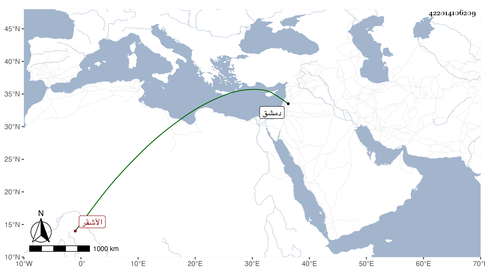

0902Sakhawi.DawLamic.ITO20230111-ara1.EIS1600.422014106209
Biography ID: 422014106209
792
أحمد صارو ومعناه بالتركية الأشقر ، كان من الأتراك المقربين فيرى الفقراء المتصوفة مع مخالطة أمراء الدولة في الأيام الظاهرية برقوق واستوطن دمشق حتى مات في شعبان سنة أربع عشرة وهو في عشر الستين ، أثنى عليه المقريزي في عقوده وأنه حسن الإعتقاد كثير الإنكار على المبتدعين محب في السنة وأهلها ونقل عنه في عدم إجابة الدعاء على الظالمين مع العلم بورود إجابة المظلوم مما صدقه فيه أنه لم يبق مظلوم في الحقيقة بل كل يظلم في المعنى الذي هو فيه من له قدرة على ظلمه ولا يتخلف إلا للعجز ، وأنه قال له عن الظاهر برقوق يرى ذا عجيبا قال له لا يلتفت لما في البخاري ومسلم إذ أكثر ما فيهما كذب فقال له برقوق يا شيخ إنهما كانا في زمن لو كذب فيه أحد على النبي صلى الله عليه وسلم قتلوه انتهى .
